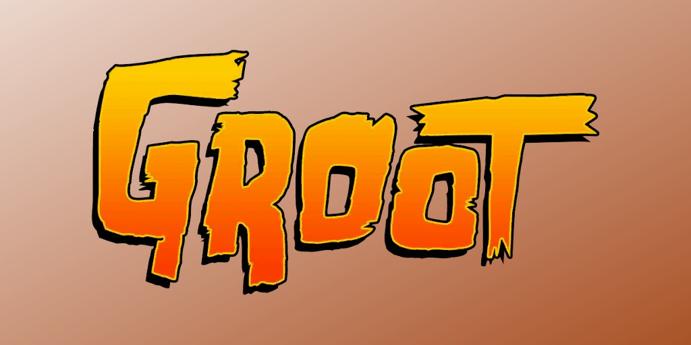
Groot (Terre-616)
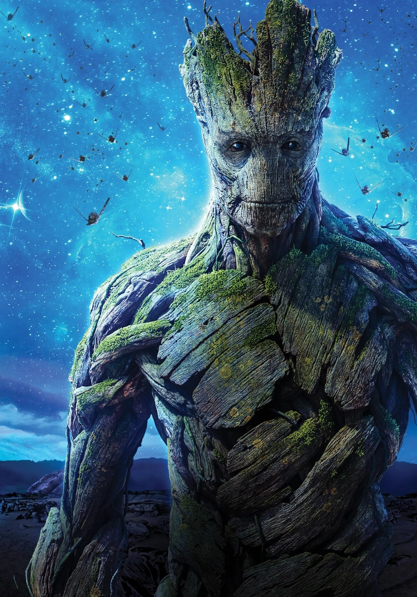
Origines :
Groot est un Colosse Floral originaire de la Planète X, la capitale des Branchworlds, un ensemble de mondes-jardins créés par l’Ancien de l’Univers connu sous le nom du Jardinier.
Durant son enfance, Groot grandit aux côtés d’autres jeunes Colosses comme Tweeg et Gleef.
Il fut élevé par ses parents ainsi que par les Maîtres des Arbres, des êtres faisant office à la fois de dirigeants, de protecteurs et d’enseignants de leur civilisation.
Les Colosses Floraux apprenaient grâce à un processus unique lié à la photosynthèse.
À chaque lever de soleil, les connaissances accumulées par des générations de Maîtres des Arbres étaient transmises aux jeunes pousses à travers l’énergie de la Planète X.
Contrairement aux autres membres de son espèce, Groot avait beaucoup de mal à s’intégrer parmi ses semblables.
Il préférait la compagnie des « Mammifères d'Entretien », de petites créatures chargées d’entretenir les racines, les systèmes de drainage et les infrastructures biologiques de la Planète X.
Ces créatures étaient méprisées par la majorité des Colosses, qui les considéraient comme inférieures.
Groot fut l’un des rares à remarquer les injustices qu’elles subissaient quotidiennement.
Choqué par leur situation, il commença à défendre leurs droits et à dénoncer leur traitement.
Son soutien inspira progressivement les Mammifères à s’organiser et à former un mouvement de résistance appelé la « Résistance des Profondeurs ».
Cette prise de position isola davantage Groot du reste de son peuple.
Il se sentait déjà différent des autres membres de son espèce, notamment en raison de leur attitude envers les espèces plus faibles et de certaines expéditions menées par son espèce sur d’autres mondes.
Au fil du temps, Groot quitta son monde et mena une vie d’aventurier à travers la galaxie.
Un jour, alors qu’il était emprisonné dans une prison Kree, il fit la rencontre de Rocket Raccoon, qui partageait sa cellule.
Au départ, Rocket avait beaucoup de mal à supporter Groot, incapable de comprendre son langage limité à la célèbre phrase « Je s'appelle Groot ».
Malgré cela, les deux prisonniers finirent par se rapprocher lorsque Rocket prit sa défense face aux gardiens qui le maltraitaient.
Les deux détenus développèrent rapidement une forte amitié et affrontèrent ensemble leurs geôliers.
Peu après, ils furent recrutés par Star-Lord pour participer à une mission extrêmement dangereuse destinée à stopper la menace des Phalanx et d’Ultron, qui cherchaient à prendre le contrôle de la galaxie.
Aux côtés de Rocket, Mantis, Bug, Deathcry, Captain Universe et Star-Lord, Groot participa à cette mission et contribua à empêcher la propagation d’un nanovirus Phalanx à grande échelle.
Après cette victoire, Star-Lord décida de créer une équipe permanente afin d’empêcher que de telles catastrophes ne se reproduisent.
Groot rejoignit alors Star-Lord, Rocket Raccoon, Gamora, Drax, Adam Warlock, Phyla-Vell et plusieurs autres héros cosmiques dans cette nouvelle organisation installée sur Knowhere.
Cette équipe devint par la suite les « Gardiens de la Galaxie », faisant de Groot l’un de ses premiers membres fondateurs.
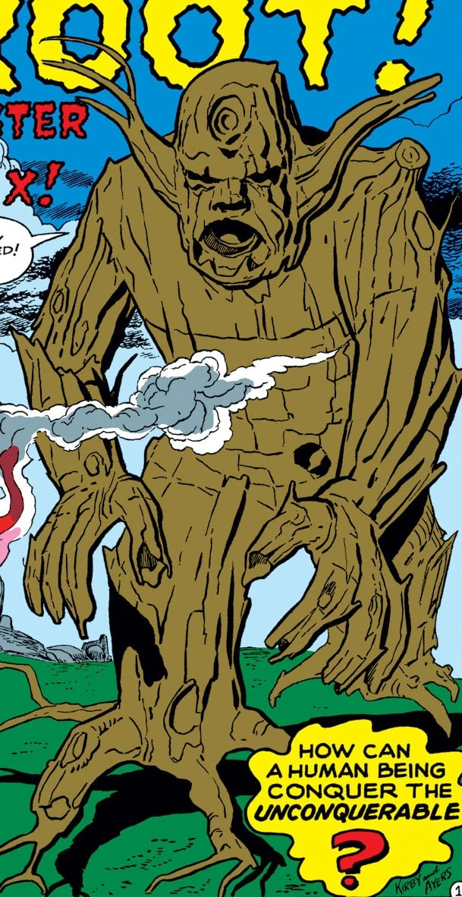
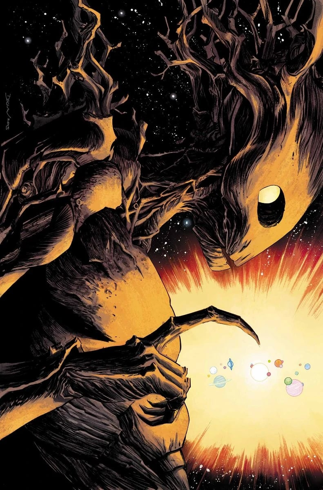
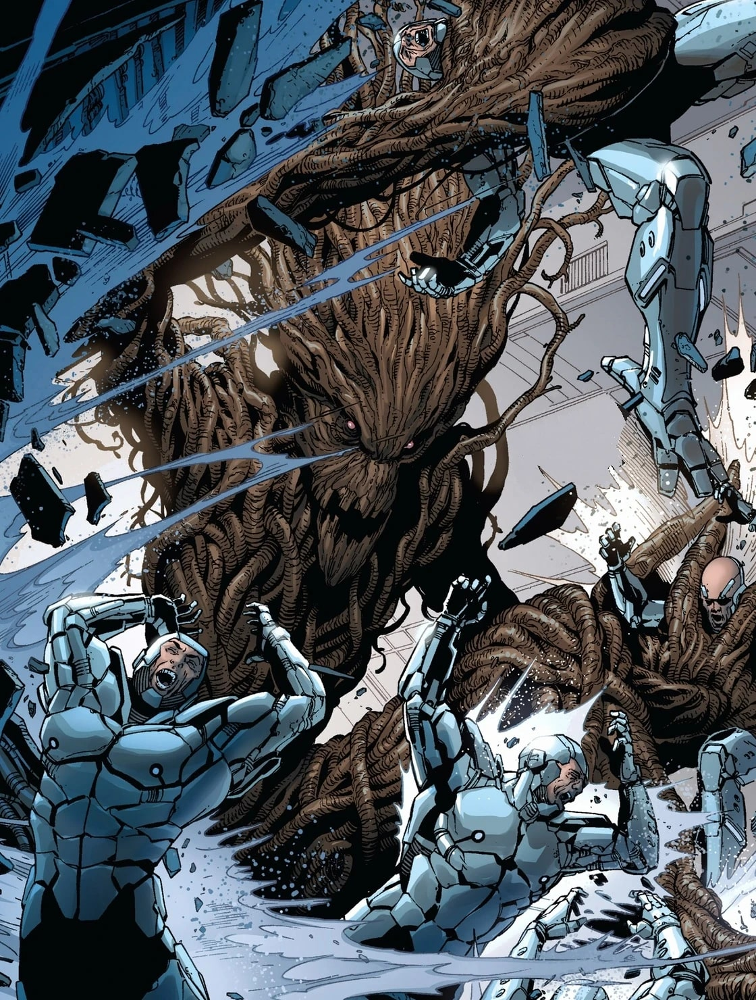
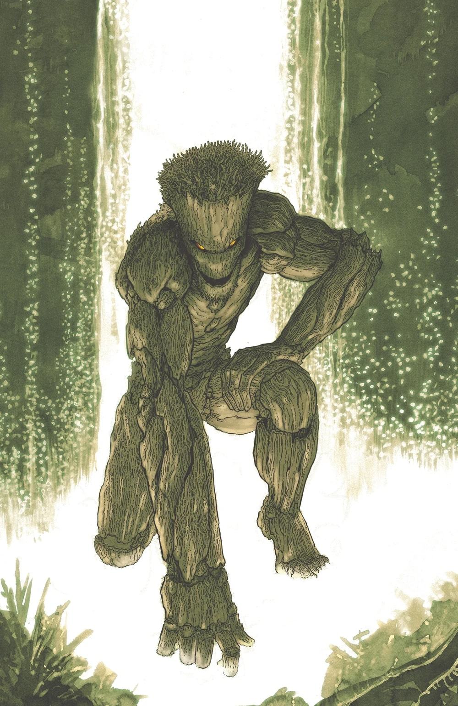
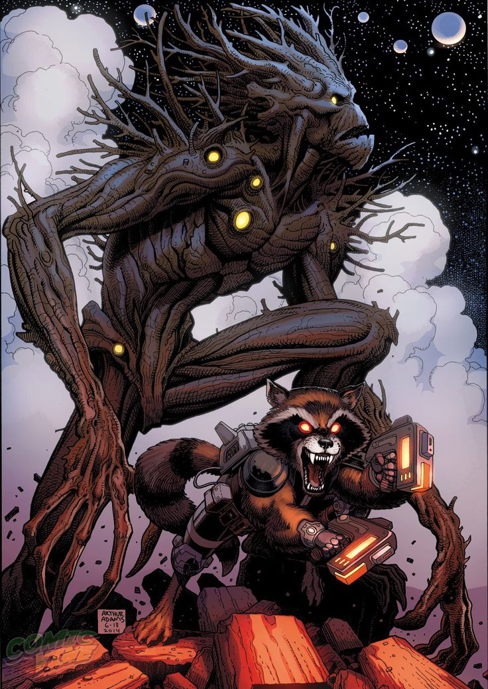
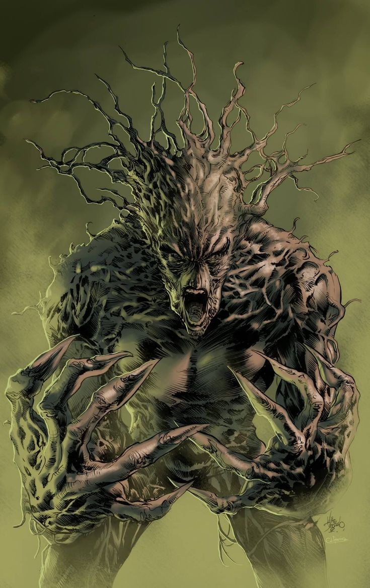
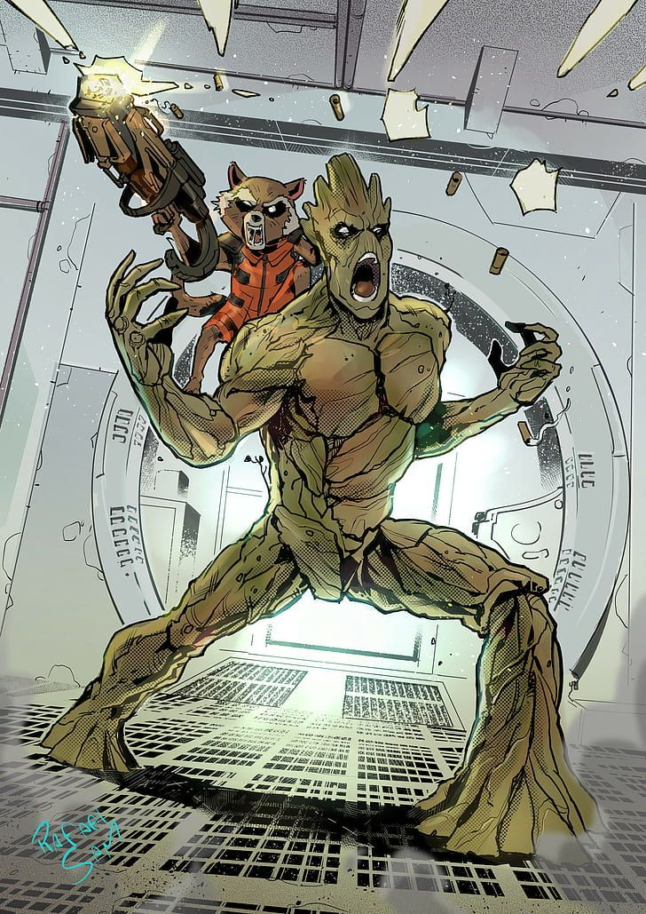
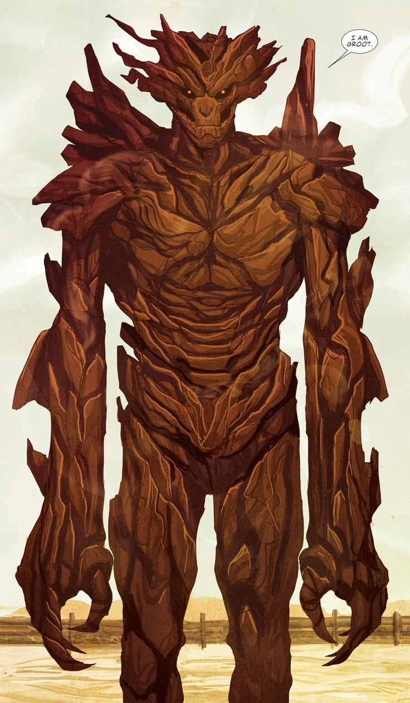
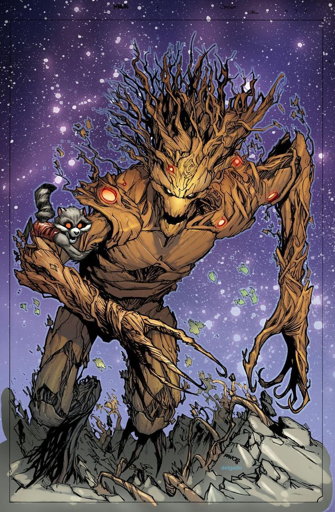
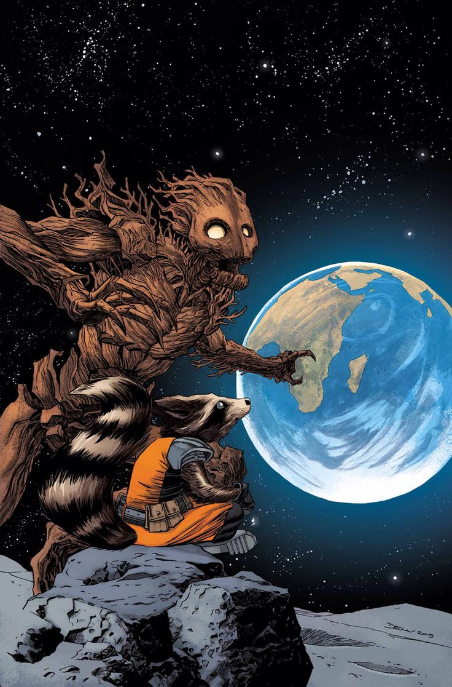
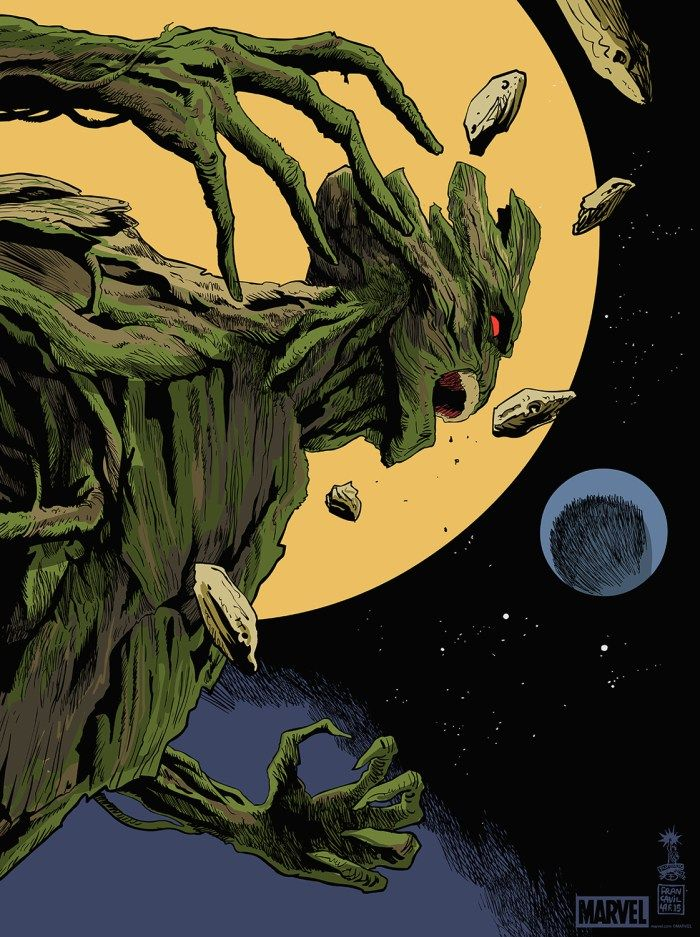
Personnalité :
Groot possède une nature profondément pacifique, et éprouve beaucoup d'empathie envers les êtres faibles, rejetés ou opprimés.
Dès son plus jeune âge, il se distingue de ses semblables en prenant la défense des créatures considérées comme inférieures par son peuple.
Il est extrêmement loyal envers ceux qu'il considère comme ses amis et sa famille, et est prêt à tout pour les protéger.
C'est d'autant plus vrai avec son meilleur ami, Rocket Raccoon.
Contrairement à Rocket, qui est colérique et impulsif, Groot est habituellement calme, réfléchi et posé. Il est le parfait opposé de son ami.
Capacités :
En tant qu'être végétal, Groot peut absorber de l'eau ou du bois pour guérir de ses blessures, grandir ou augmenter sa force.
Il possède une grande force physique et résiste aux impacts n'étant pas assez puissants pour endommager son corps de bois.
Il ne possède ni organes internes, ni système nerveux, ce qui fait que même réduit en éclats, il peut survivre et se créer un nouveau corps à partir d'une petite brindille de son corps précédent.
Sa régénérescence peut durer plusieurs semaines, voire plusieurs mois dans de bonnes conditions (eau, lumière, terre de qualité) pour reprendre sa taille initiale.
Il est également capable de communiquer avec les plantes, et de contrôler les végétaux.

Apparence :
Groot est un Flora Colossus, une espèce avec une apparence d'humanoïde-végétale.
Son corps est entièrement constitué de bois vivant, de racines, de lianes et d'écorces.
Sa peau est généralement d'un brun clair à brun foncé, avec des rainures et des fissures rappelant l'écorce d'un arbre.
Il mesure entre 2,50 et 5 mètres de haut selon les époques.
Ses épaules sont larges, ses bras sont massifs et ses mains se terminent par de longs doigts semblables à des branches.
Il possède de grands yeux sombres ou lumineux selon les artistes, avec une large bouche formée dans le bois, et il a parfois de petites excroissances, comme des branches, des pousses, ou des feuilles qui lui poussent sur la tête.
Les principaux ennemis de Groot
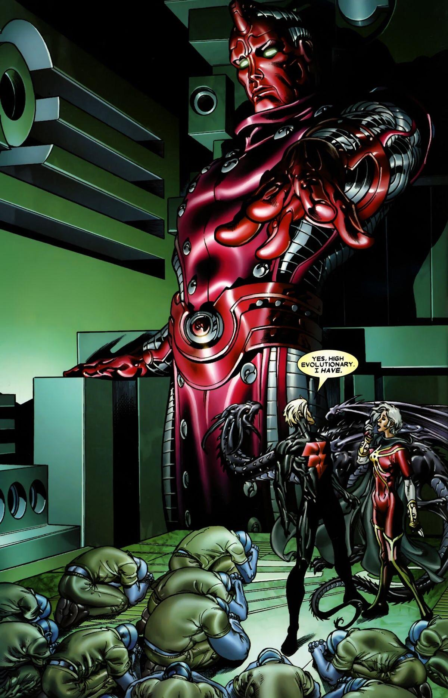


Équipes affiliées